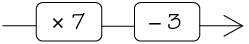

Algebraïese uitdrukkings
’n Algebraïese uitdrukking is ’n beskrywing van sekere berekeninge wat in ’n bepaalde volgorde gedoen moet word. In hierdie hoofstuk word jy bekendgestel aan die taal van algebra. Jy leer ook van uitdrukkings wat verskillend lyk maar tog dieselfde resultate lewer wanneer hulle geëvalueer word. Wanneer ons ’n uitdrukking evalueer, kies ons ’n waarde vir die veranderlike in die uitdrukking, of dit word vir ons gegee. Omdat ons nou ’n werklike waarde het, kan ons die bewerkings (\(+, -, \times, \div)\) in die uitdrukking uitvoer deur hierdie waarde te gebruik.
Algebraïese taal
Woorde, diagramme en simbole
- Voltooi die tabel.
Woorde
Vloeidiagram
Uitdrukking
Vermenigvuldig ’n getal met twee en tel dan ses by die antwoord.

\( 2 \times x + 6\)
(a)
Tel drie by ’n getal en vermenigvuldig dan die antwoord met twee.
\( 2 \times x + 3\)
(b)
Tel drie by ’n getal en vermenigvuldig dan die antwoord met twee.

\(5x -1\)
(c)
Tel drie by ’n getal en vermenigvuldig dan die antwoord met twee.
\( 7 + 4 \times x\)
(d)
Tel drie by ’n getal en vermenigvuldig dan die antwoord met twee.
\( 10 - \times x\)
'n Algebraïese uitdrukking dui ’n reeks opeenvolgende berekeninge aan wat ook in woorde of met ’n vloeidiagram beskryf kan word. Die vloeidiagram wys die volgorde waarin die berekeninge gedoen moet word.
In algebraïese taal word die vermenigvuldigings- teken gewoonlik weggelaat.
Ons skryf dus \(2x\) in plaas van \( 2 \times x\)
Ons skryf ook \( x \times 2 \text{ as } 2x \)
- Skryf die volgende uitdrukkings in âgewone’ algebraïese taal:
- \( 2 \times a + b\)
- \(a2\)
- \( 2 \times a + b\)
Lyk verskillend maar is tog dieselfde
- Voltooi die tabel deur die numeriese waardes van die uitdrukkings vir die gegewe
waardes van x te bereken. Twee antwoorde vir \(x = 1\) is as ’n voorbeeld vir jou gedoen.
\(x\)
1
3
7
10
(a)
\(2x + 3x\)
\(2 \times 1 + 3 \times 1\)
\(2 + 3 = 5\)
(b)
\(5x\)
(c)
\(2x + 3\)
(d)
\(5x^2\)
\(5 \times (1)^2\)
\(5 \times 1 = 5\)
- Lewer die uitdrukkings
\(2x + 3\) en \(5x\), in vraag 1 hier bo, verskillende of dieselfde
antwoorde vir:
- \(x = 3\)?
- \(x = 10\)?
- \(x = 3\)?
- Lewer die uitdrukkings \(2x + 3\)en \(5x\) verskillende of dieselfde antwoord vir:
- \(x = 3\)?
- \(x = 10\)?
- \(x = 3\)?
- Skryf al die algebraïese uitdrukkings in vraag 1 neer wat dieselfde numeriese waarde
vir dieselfde waarde(s) van x het, al lyk hulle verskillend. Verduidelik jou antwoord.
Een van die dinge wat ons in algebra doen, is om uitdrukkings te evalueer. Wanneer ons ’n uitdrukking evalueer, kies ons ’n waarde vir die veranderlike in die uitdrukking, of dit word vir ons gegee. Omdat ons nou ’n werklike waarde het, kan ons die bewerkings in die uitdrukking uitvoer deur hierdie waarde te gebruik, soos dit gedoen is in die voorbeelde in die tabel op die vorige bladsy. Algebraïese uitdrukkings wat dieselfde numeriese waarde vir dieselfde waarde van x het maar verskillend lyk, word ekwivalente uitdrukkings genoem. .
- Sê of die volgende stellings waar of onwaar is. Verduidelik elke keer jou antwoord.
- Die uitdrukkings \(2x + 3x\)
en \(5x\) is ekwivalent.
- Die uitdrukkings \(2x + 3\)
en \(5x\)is ekwivalent.
- Die uitdrukkings \(2x + 3x\)
en \(5x\) is ekwivalent.
- Kyk na die uitdrukkings \(3x + 2z + y\) en \(6xyz\).
On thou dat \(6xyz\) dieselfde is as \(6 \times x \times y \times z\).
- Wat is die waarde van \(3x + 2z + y\) vir \( x = 4\) , \(y = 7\) en
\(z = 10\)?
- Wat is die waarde van \(6xyz\)
vir \( x = 4\) , \(y = 7\) en \(z = 10\)?
- Is die uitdrukkings \(3x + 2z + y\) en \(6xyz\) ekwivalent? Verduidelik.
- Wat is die waarde van \(3x + 2z + y\) vir \( x = 4\) , \(y = 7\) en
\(z = 10\)?
Om te wys dat die twee uitdrukkings in vraag 5(a) ekwivalent is, skryf ons \(2x + 3x = 5x\).
Ons kan verduidelik waarom dit so is:
\(2x + 3x = (x + x) + (x + x + x) = 5x\)
Ons sê die uitdrukking \(2x + 3x\) vereenvoudig tot \(5\).
Die term \(3x\) is ’n produk. Die getal 3 word die koëffisiënt of \(x\).
- Skryf ’n ekwivalente uitdrukking neer vir elk van die volgende uitdrukkings:
- \(3x + 3x\)
- \(3x + 8x + 2x\)
- \(8b + 2b + 2b\)
- \(7m + 2m + 10m\)
- \(3x^2 + 3x^2\)
- \(3x^2 + 8x^2 + 2x^2\)
- \(3x + 3x\)
- Wat is die koëffisiënt van
\(x^2\) vir die uitdrukking wat ekwivalent is aan \(3x^2 + 8x^2 + 2x^2\)?
Wanneer ’n uitdrukking as ’n som geskryf kan word, word die verskillende dele van die uitdrukking die terme van die uitdrukking genoem. Byvoorbeeld, \(3x,2z \text{ en } y\) is die terme van die uitdrukking \(3x + 2z + y\).
’n Uitdrukking kan gelyksoortige terme of albei hê.
Gelyksoortige terme is terme met dieselfde veranderlike(s), verhef tot dieselfde mag.. Die terme \(2x\) en \(3x\) is voorbeelde van gelyksoortige terme.
-
- Bereken die numeriese waarde van \(10x + 2y\) vir \(x = 3\) en \( y = 2\) deur die oop spasies in die diagram in te vul.
- Wat is die uitvoerwaarde vir die uitdrukking \(12xy\) vir \(x = 3 \text{ en } y = 2\)?
- Is die uitdrukkings \(10x +2y\) en \(12xy\) ekwivalent? Verduidelik.
- Is die terme\(10x\) en \(2y\)
gelyksoortige of ongelyksoortige terme? Verduidelik.
-
- Watter van hierdie algebraïese uitdrukkings dink jy sal dieselfde resultate gee?
A. \( 6x + 4x\)
B. \(10x\)
C. \(10x^2\)
D. \(9x + x\)
- Toets die algebraïese uitdrukkings wat jy geïdentifiseer het vir die volgende
waardes van \(x\)
\( x = 10\)
\( x = 17\)
\( x = 54\)
- Is die terme \(6x\) en \(4x\) gelyksoortige of ongelyksoortige terme? Verduidelik.
- Is die terme \(10x\) en \(10x^2\) gelyksoortige of ongelyksoortige terme? Verduidelik.
- Watter van hierdie algebraïese uitdrukkings dink jy sal dieselfde resultate gee?
- Ashraf en Hendrik het ’n meningsverskil oor of die terme \(7x^2y^3\) en \(301y^3x^2\) gelyksoortige terme is of nie. Hendrik dink hulle is nie, want in die eerste term kom
die \(x^2\) voor die \(y^3\) terwyl die \(y^3\) voor die \(x^2\)kom in die tweede term.
Verduidelik vir Hendrik waarom sy argument verkeerd is.
- 12. Verduidelik waarom die terme\(5abc, 10acb \text{ en } 15cba\) gelyksoortige terme is.
Optel en aftrek van gelyksoortige terme
Herrangskik terme en kombineer dan gelyksoortige terme
- Voltooi die tabel deur die uitdrukkings vir die gegewe waardes van x te evalueer.
\(x\)
1
2
10
\(30x + 80\)
\(30 \times 1 + 80\)
\(= 30 + 80 = 110\)
\(5x + 20\)
\(30x + 80 + 5x + 20\)
\(35x + 100\)
\(135x\)
- Skryf al die ekwivalente uitdrukkings wat in die tabel voorkom neer.
- Tim dink die uitdrukkings \(135x\) en \(35x +100\) is ekwivalent, want vir \(x = 1\) het hulle
albei dieselfde numeriese waarde, naamlik 135.
Verduidelik vir Tim waarom die twee uitdrukkings nie ekwivalent is nie.
Ons het reeds die omruilings- en groeperingseienskappe van bewerkings teëgekom en gaan dit nou gebruik om ons te help om ekwivalente algebraïese uitdrukkings te vorm.
Omruilingseienskap
Die volgorde waarin ons getalle optel of vermenigvuldig verander nie die antwoord nie: \(a + b = b + a\) en \( ab = ba\)
Groeperingseienskap
Die manier waarop ons drie of meer getalle groepeer wanneer ons optel of vermenigvuldig, verander nie die antwoord nie: \((a +b)+c = a + (b + c)\) en \((ab)c = a(bc)\)
Ons kan ’n ekwivalente uitdrukking vind gelyksoortige terme te herrangskik en kombineer,soos hier onder gewys word:
\(30x + 80 + 5x + 20\)
Dus \(30x + (80 + 5x) + 20\)
Dus \(30x + (80 + 5x) + 20\)
\(= (30x + 5x) + (80 + 20)\)
\(= 35x + 100\)
Die terme 80 en 20 word konstantes genoem.Die getalle 30 en 5 word koëffisiënte genoem.
Hakies is in die uitdrukking hier links gebruik om te wys hoe die gelyksoortige terme herrangskik is.
Gelyksoortige terme word gekombineer om een term te vorm.
Die terms \(30x\) en \(5x\) word gekombineer om die nuwe term 35x te kry en die terme 80 en 20 word gekombineer om die nuwe term 100 te kry. Ons sê dat die uitdrukking \(30x + 80 + 5x + 20\) tot ’n nuwe uitdrukking \(35x + 100\) is vereenvoudig word.
- Vereenvoudig die volgende uitdrukkings:
- \(13x + 7 + 6x - 2\)
- \(21x - 8 + 7x + 15\)
- \(8c - 12d + 5c - 7c\)
- \(3abc + 4 + 7abc - 6\)
- \(12x^2 + 2x - 2x^2 + 8x\)
- \(7m^3 + 7m^2 + 9m^3 + 1\)
- \(13x + 7 + 6x - 2\)
Wanneer jy nie seker is of jy ’n uitdrukking reg vereenvoudig het nie, is dit altyd raadsaam om jou werk na te gaan deur die oorspronklike uitdrukking en die vereenvoudigde uitdrukking vir ’n paar waardes te evalueer. Dit is ’n baie nuttige gewoonte.
Wanneer ons ’n waarde van die veranderlike in die uitdrukking gebruik, noem ons dit substitusie of vervanging.
- Maak ’n eenvoudiger uitdrukking wat ekwivalent is aan die gegewe uitdrukking.
Toets jou antwoord vir drie verskillende waardes van x en doen jou werk oor tot jy dit
regkry.
- \(15x + 7y + 25x + 3 + 2y\)
- \(12mn + 8mn\)
- \(15x + 7y + 25x + 3 + 2y\)
Skryf in vrae 6 tot 8 die letter van die korrekte antwoord neer. Verduidelik ook waarom jy dink jou antwoord reg is.
- Die som van \( 5x^2 + x + 7\) en \(x - 9\) is:
A. \(x^2 -2\)
B. \(5x^2 + 2x +16\)
C. \(5x^2 + 16\)
D. \(5x^2 + 2x - 2\)
- Die som van \(6x^2 - x + 4\) en \(x^2 - 5\) is ekwivalent aan:
A. \(7x^2 - x + 9\)
B. \(7x^2 - x - 1\)
C. \(6x^4 - x - 9\)
D. \(7x^4 - x - 1\)
- Die som van \(5x^2 + 2x + 4\) en \(3x^2 - 5x - 1\) kan uitgedruk word as:
A. \( 8x^2 + 3x + 3\)
B. \(8x^2 + 3x - 3\)
C. \(8x^2 - 3x + 3\)
D. \(8x2 - 3x - 3\)
Om gelyksoortige terme te kombineer is ’n nuttige algebraïese gewoonte. Dit stel ons in staat om ’n uitdrukking met ’n ander uitdrukking te vervang wat gerieflik kan wees om mee te werk.
Doen die volgende vrae om ’n idee te kry waarvan ons praat.
Gerieflike vervangings
- Kyk na die uitdrukking\( x + x + x + x + x + x + x + x + x + x\). Wat is die waarde van die
uitdrukking in elk van die volgende gevalle?
- \(x = 2\)
- \(x = 50\)
- \(x = 2\)
- Kyk na die uitdrukking \(x + x + x + z + z + y\). Wat is die waarde van die
uitdrukking in elk van die volgende gevalle?
- \(x = 4, y = 7, z = 10\)
- \(x = 0, y = 8, z = 22\)
- \(x = 4, y = 7, z = 10\)
- Gestel jy moet \(3x + 7x\) vir \(x = 20\). Sal jy die korrekte antwoord kry as jy \(10 \times 20\) bereken? Verduidelik.
Gestel ons evalueer die uitdrukking \(3x + 7x\) vir \(x = 20\) sonder om eers die gelyksoortige terme te kombineer. Ons sal drie berekeninge moet doen, naamlik\(3 \times 20\), dan \(7 \times 20\) en dan moet ons die som van die twee bepaal: \(3 \times 20 + 7 \times 20 = 60 + 140 = 200\).
Maar as ons eers die gelyksoortige terme \(3x \text{ en } 7x\)in een term\(10x\), kombineer, hoef ons net een berekening te doen \(10 \times 20 = 200\). Dit is een manier om oor die gerief of nuttigheid van die vereenvoudiging van ’n algebraïese uitdrukking te dink.
- Die uitdrukking \(5x + 3x\) word gegee en jy moet dit evalueer vir \(x = 8\). Sal die
berekening \(8 \times 8\) die korrekte antwoord gee? Verduidelik.
- Gestel jy moet \(7x + 5\) vir \(x = 10\). Sal die berekening \(12
\times 10\) die korrekte
antwoord gee? Verduidelik.
- Die uitdrukking
\(5x + 3\) word gegee en jy moet dit evalueer vir\(x
= 8\). Sal die berekening \(8 \times 8\) die korrekte antwoord gee? Verduidelik.
Samantha is gevra om die uitdrukking \(12x^2 + 2x - 2x^2 + 8x\) vir \(x = 12\). te evalueer. Sy het gedink dat dit baie werk sal wees om bloot die waarde van x direk in die terme te vervang. Daarom het sy eers die gelyksoortige terme gekombineer, soos hier onder gewys word:
\(12x^2 {\bf- 2x^2 + 2x} +8x \\ 10x^2 + 10x\)
Die terme \(+2x\) en \(-2x^2\) ruil plekke deur die omruilingseienskap van bewerkings.
Toe het \(x =10\), Samantha vir \(10x^2 + 10x\) die waarde van
\(10 \times 10^2 + 10 \times 10 \\ = 1000 + 100 \\ = 1100\)
Gebruik Samatha se manier van dink vir vrae 7 tot 9.
- Wat is die waarde van \(12x + 25x + 75x + 8x\) wanneer \(x =6\)
- Evalueer \( 3x^2 + 7 + 2x^2 + 3\) vir \(x = 5\).
- Toe Zama die uitdrukking\(2n - 1 + 6n \) vir \(n
= 4\),moes evalueer, het sy geskryf:
\(\begin{align} 2n - 1 + 6n &= n + 6n = 6n^2 \\ \text{Hence vir } n &= 4: 6 \times (4)^2 = 6 \times 8 = 48 \end{align}\)
Verduidelik waar Zama gefouteer het en waarom.
- Voltooi die tabel.
Woorde
Vloeidiagram
Uitdrukking
(a)
Vermenigvuldig ’n getal met drie en tel twee by die antwoord.

(b)
\(9x-6\)
(c)

\(7x-3\)
- Watter van die volgende pare bestaan uit gelyksoortige terme? Verduidelik.
A.\(3y; -7y\)
B. \(14e^2; 5e\)
C \(3y^2z; 17y^2z\)
D. \(-bcd; 5bd\)
- Skryf die volgende op die âgewone’ algebraïese manier.
- \(c2 + d3\)
- \( 7 \times d \times e \times f \)
- \(c2 + d3\)
- Kyk na die uitdrukking\(12x^2 - 5x + 3\).
- Wat word die getal 12 genoem?
- Skryf die koëffisiënt van x neer \(x\).
- Wat word die getal 3 genoem?
- Verduidelik waarom die terme \(5pqr\) en \(-10prq\) en \(15qrp\) terme is.
- Indien \(y =7\), wat is die waarde van elk van die volgende?
- \(y+8\)
- \(9y\)
- \(7 -y\)
- Vereenvoudig die volgende uitdrukkings:
- \(18c + 12d + 5c - 7c\)
- \(3def + 4 + 7def - 6\)
- \(18c + 12d + 5c - 7c\)
- Evalueer die volgende uitdrukkings: \(y = 3; z =-1\):
- \(2y^2 + 3z\)
- (\(2y)^2 + 3z\)
- \(2y^2 + 3z\)
- Skryf elke algebraïese uitdrukking in die eenvoudigste vorm:
- \(5y + 15y\)
- \(5c + 6c - 3c + 2c\)
- \(4b + 3 + 16b - 5\)
- \(7m + 3n + 2 - 6m\)
- \(5h^2 + 17 - 2h^2 + 3\)
- \(7e^2f + 3ef + 2 + 4ef\)
- \(5y + 15y\)
- Evalueer die volgende uitdrukkings:
- \(3y+ 3y + 3y + 3y + 3y + 3y \) vir \(y = 18\)
- \(13y + 14 - 3y + 6\) vir \(y = 200\)
- \(20 - y^2 + 101y^2 + 80\) vir \(y = 1\)
- \(12y^2 + 3yz + 18y^2 + 2yz\) vir \(y=3\) en \( z = 2\)
- \(3y+ 3y + 3y + 3y + 3y + 3y \) vir \(y = 18\)
Algebraïese vergelykings
In hierdie hoofstuk gaan jy leer om getalle te bepaal wat sekere bewerings waar maak. ’n Bewering oor ’n onbekende getal word ’n vergelyking genoem. Wanneer ons werk om uit te vind watter getal die vergelyking waar sal maak, sê ons dat ons die vergelyking oplos. Die getal wat die vergelyking waar maak word die oplossing van die vergelyking genoem.
Stel vergelykings op
'n Vergelyking is ’n wiskundige sin wat waar is vir sekere getalle, maar onwaar vir ander getalle. Die volgende is voorbeelde van vergelykings:
\[x + 3 = 11 \text{ en } 2^x = 8\]
\(x + 3 = 11\) is waar as \(x =8\), maar onwaar as \(x =3\).
Wanneer ons na ’n getal of getalle soek wat ’n vergelyking waar maak, sê ons dat ons die vergelyking oplos.. Byvoorbeeld, \(x = 4\) is die oplossing of \(2x + 8\) want dit maak \(2x +8\)waar. (Toets: \(2 \times 4 = 8\)
Soek getalle wat bewerings waar maak
- Is die volgende bewerings waar of onwaar? Verduidelik jou antwoord.
- \(x - 3 = 0\), if \(x = -3\)
- \(x^3 = 8\), if \(x = -2\)
- \(3x = -6\), if \(x = -3\)
- \(3x = 1\), if \(x = 1\)
- \(6x + 5 = 47\), if \(x = 7\)
- \(x - 3 = 0\), if \(x = -3\)
- Bepaal die oorspronklike getal. Wys hoe jy redeneer.
- ’n Getal vermenigvuldig met 10 is 80.
- Tel 83 by ’n getal en die antwoord is 100.
- Deel ’n getal deur 5 en die antwoord is 4.
- Vermenigvuldig ’n getal met 4 en die antwoord is 20.
- Twee maal ’n getal is 100.
- ’n Sekere getal verhef tot die mag 5 is gelyk aan 32.
- ’n Sekere getal verhef tot die mag 4 is gelyk aan -81.
- Vyftien maal ’n getal is 90.
- 93 by ’n getal getel is -3.
- Die helfte van ’n getal is 15.
- ’n Getal vermenigvuldig met 10 is 80.
- Skryf die vergelykings hier onder in woorde neer deur “’n getal” in die plek van die
lettersimbool
\(x\). te gebruik. Skryf dan elke keer neer wat jy dink “die getal” is.
Voorbeeld: \(4 +x = 23\). Vier plus ’n getal is gelyk aan drie-en-twintig. Die getal is 19.
- \(8x = 72\)
- \( \frac{2x}{5} = 2 \)
- \( 2x+ 5 = 21\)
- \( 12 + 9x = 30\)
- \(30 - 2x = 40\)
- \(5x + 4 = 3x+ 10\)
- \(8x = 72\)
Los vergelykings op deur inspeksie
Die antwoord is duidelik sigbaar
-
Sewe vergelykings verskyn onder die tabel.
Gebruik die tabel om te bepaal vir watter van die
gegewe waardes van x die linkerkant van die
vergelyking gelyk is aan die regterkant van die
vergelyking.
Jy kan die oplossing van ’n vergelyking van ’n tabel aflees.
\(x\)
-3
-2
-1
0
1
2
3
4
\(2x + 3\)
-3
-1
1
3
5
7
9
11
\(x + 4\)
1
2
3
4
5
6
7
8
\(9 -x\)
12
11
10
9
8
7
6
5
\(3x -2\)
-11
-8
-5
-2
1
4
7
10
\(10x -7\)
-37
-27
-17
-7
3
13
23
33
\(5x +3\)
-12
-7
-2
3
8
13
18
23
\(10 - 3x\)
19
16
13
10
7
4
1
-2
- \(2x + 3 = 5x + 3\)
- \(5x + 3 = 9 - x\)
- \(2x + 3 = x+4\)
- \(10x -7 = 5x + 3\)
- \(3x -2 = x+4\)
- \(9 -x = 2x + 3\)
- \(10 -3x = 3x - 2\)
- \(2x + 3 = 5x + 3\)
Twee vergelykings kan dieselfde oplossing hê. Byvoorbeeld, \(5x = 10\) en \(x + 2 = 4\) het dieselfde oplossing; \(x = 2\) is die oplossing van albei vergelykings.
Wanneer twee vergelykings dieselfde oplossing het, sê ons hulle is ekwivalent.
- Watter van die vergelykings in vraag 1 het dieselfde oplossing? Verduidelik.
- Voltooi die tabel.
Beantwoord dan die vrae wat volg.
Jy kan ook die oplossing van ân vergelyking soek deur die moontlikhede te beperk.
\(x\)
0
5
10
15
20
25
30
35
40
\(2x + 3\)
\(3x -10\)
- Gee die tabel die oplossing vir \(2x + 3 = 3x - 10\)?
- Wat gebeur met die waardes van \(2x + 3\) en \(3x - 10\) as \(x\) soos wat x groter word? Word
hulle groter of kleiner?
- Is daar ’n punt waar die waarde van
\(3x - 10\) groter of kleiner word as die waarde van
\(2x + 3\) soos wat die waarde van x toeneem?
Indien wel, tussen watter waardes van x gebeur dit?
Die punt waar die twee vergelykings gelyk is, word die gelykbreekpunt genoem.
- Noudat jy vasgestel het waar die waarde
van x min of meer lê, toets verskillende
moontlike waardes van x totdat jy die
waarde van x gevind het wat die vergelyking \(2x + 3 = 3x - 10\) waar maak.
"Wanneer ons na ’n oplossing van ’n vergelyking soek met behulp van tabelle of deur moontlikhede te beperk, sê ons dat ons die vergelyking oplos deur inspeksie..
- Gee die tabel die oplossing vir \(2x + 3 = 3x - 10\)?
Meer voorbeelde
Soek oplossings en kontroleer dit dan
- Wat is die oplossings van die vergelykings hier onder?
- \(x - 3 = 4\)
- \(x + 2 = 9\)
- \(3x = 21\)
- \(3x + 1 = 22\)
- \(x - 3 = 4\)
Wanneer ’n sekere getal die oplossing van ’n vergelyking is, sê ons dat die getal die vergelyking bevredig Byvoorbeeld, \(x=4\) bevredig die vergelyking \(3x=12\) want \(3 \times 4 = 12\).
- Kies die getal tussen hakies wat die vergelyking bevredig. Verduidelik jou keuse.
- \(12x = 84\) {5; 7; 10; 12}
-
\( \frac{84}{x} = 12\) {-7; 0; 7; 10}
-
\(48 = 8k + 8\) {-5; 0; 5; 10}
\(19 - 8m = 3\) {-2; -1; 0; 1; 2}
\(20 = 6y - 4\) {3; 4; 5; 6}
\(x^3 = -64\) {-8; -4; 4; 8}
\(5^x =125\) {-3; -1; 1; 3}
\(2^x = 8\) {1; 2; 3; 4}
\(x^2 = 9\) {1; 2; 3; 4}
- \(12x = 84\) {5; 7; 10; 12}
- Wat maak die volgende vergelykings waar? Kontroleer jou antwoorde.
- \(m + 8 = 100\)
- \( 80 = x + 60 \)
- \(26 - k = 0 \)
- \(105 \times y = 0\)
- \( k \times 10 = 10 \)
- \(5x = 100\)
- \( \frac{15}{t} = 5 \)
- \( 3 = \frac{t}{5} \)
- \(m + 8 = 100\)
- Los die vergelykings op deur inspeksie. Kontroleer jou antwoorde.
- \( 12x + 14 = 50 \)
- \(100 = 15m + 25\)
- \( \frac{100}{x} =20\)
- \( 7m + 5 = 40\)
- \(2x + 8 = 10\)
- \(3x + 10 = 31\)
- \(-1 + 2x = -11\)
- \(2 + \frac{x}{7} = 5\)
- \(100 = 64 + 9x\)
- \( \frac{2x}{6}= 4\)
- \( 12x + 14 = 50 \)
Hersiening en assessering
Hersiening
Wys al die stappe van jou werk.
Telgetalle
-
- Skryf beide 300 en 160 as produkte van priemfaktore.
- Bepaal die GGD en KGV van 300 en 160.
- Skryf beide 300 en 160 as produkte van priemfaktore.
- Tommy, Thami en Timmy kry by hulle ouma geld vir hulle verjaarsdae in die
verhouding van hulle ouderdomme. Hulle word onderskeidelik 11, 13 en 16 jaar oud.
As die totale bedrag wat vir al drie seuns gegee word R1 000 is, hoeveel geld kry Thami
op sy verjaarsdag?
- Tshepo en sy gesin ry vir ’n vakansie see toe. Die afstand is 1 200 km en hulle moet
hulle bestemming binne 12 ure bereik. Na 5 ure het hulle 575 km gery en toe bars een
van die motor se bande. Dit neem 45 minute om die noodwiel aan te sit voor hulle
verder kan ry. Teen watter gemiddelde spoed moet hulle die res van die reis aflê om
hulle bestemming betyds te bereik?
- Die getal onderwysers by ’n skool het in die verhouding 5 : 6 vermeerder. As daar
eers 25 onderwysers by die skool was, hoeveel onderwysers is daar nou?
- ABC vir Altyd se jaarlikse state moet geouditeer word. Oudits Ing. kwoteer hulle
R8 500 + 14% BTW. Hoeveel sal ABC vir Altyd in totaal aan Oudits Ing. moet betaal?
- Reshmi belê R35 000 vir drie jaar teen ’n rentekoers van 8,2% per jaar. Bereken
hoeveel geld daar aan die einde van die beleggingstermyn in haar rekening sal wees.
- Lesebo wil ’n sitkamerstel koop wat R7 999 kontant kos. Hy het nie genoeg geld nie
en besluit om dit op huurkoop te koop. Die winkel vereis ’n 15% deposito wat dadelik
betaal moet word en 18 maandelikse paaiemente van R445.
- Bereken die deposito wat Lesebo moet betaal.
- Hoeveel ekstra betaal Lesebo omdat hy die sitkamerstel op huurkoop in plaas
van kontant koop?
- Bereken die deposito wat Lesebo moet betaal.
- Kyk na die volgende wisselkoerstabel:
Suid-Afrikaanse Rand
1.00 ZAR
inv. 1.00 ZAR
Euro
0.075370
13.267807
US Dollar
0.098243
10.178807
Britse pond
0.064602
15.479409
Indiese roepee
5.558584
0.179902
Australiese dollar
0.102281
9.776984
Kanadese dollar
0.101583
9.844200
Emiratiese dirham
0.360838
2.771327
Switserse frank
0.093651
10.677960
Chinese renminbi yuan
0.603065
1.658195
Maleisiese ringgit
0.303523
3.294646
- Skryf die bedrag in rand neer wat verwissel moet word om 1 Switserse frank te
kry. Gee jou antwoord tot die naaste sent.
- Skryf die enigste geldeenheid neer waarvan jy meer as 100 eenhede sal kry as jy
R100 daarvoor omruil.
- Ntsako gaan Dubai toe en ruil R10 000 om vir Emiratiese dirhams. Hoeveel
dirhams ontvang Ntsako? (Neem aan dat daar geen kommissie is nie.)
- Skryf die bedrag in rand neer wat verwissel moet word om 1 Switserse frank te
kry. Gee jou antwoord tot die naaste sent.
Heelgetalle
Moenie ’n sakrekenaar vir enige van die vrae in hierdie afdeling gebruik nie.
- Skryf ’n getal in elke blokkie om die berekeninge korrek te maak.
-
☐ + ☐ = -11
-
☐ - ☐ = -11
-
- Vul <, > of = in die blokkie in om die verwantskappe aan te dui.
- -23 ☐ 20
- -345 ☐ -350
- \(4 - 3\) ☐ \(3 - 4\)
- \(5 - 7\) ☐ \(-(7 - 5)\)
- \(-9 \times 2\) ☐ \(-9 \times -2\)
- \( -4 \times 5\) ☐ \(4 \times -5\)
- \( -10 \div 5 ☐ -10 \div -2 \)
- \(-15 \times -15\) ☐ 224
- Volg die patroon om die getallerye te voltooi.
- 8; 5; 2; ☐
- 2; -4; 8; ☐
- -289; -293; -297; ☐
- Kyk na die getallelyne. Albei ontbrekende getalle is halfpad tussen die ander twee
getalle. Vul die korrekte waardes in die blokkies in.
-
- Bereken die volgende:
- \( -5 - 7\)
- \( 7 - 10\)
- \( 8-(-9)\)
- \( (-5)(-2)(-4)\)
- \( 5 + 4 \times 2\)
- \( \frac{(\sqrt{4})(-2)^2}{-4}\)
- \( \frac{-(-3)^3\sqrt[3]{125}}{(-9)(3)}\)
- \( \frac{\sqrt[3]{-64}}{-3-1}\)
- \( -5 - 7\)
-
- Skryf twee getalle neer wat -15 as antwoord gee wanneer hulle met mekaar
vermenigvuldig word. (Een van die getalle moet positief wees en die ander een
negatief.)
- Skryf twee getalle neer wat 15 as antwoord gee wanneer hulle bymekaargetel
word. Een van die getalle moet positief wees en die ander een negatief.
- Skryf twee getalle neer wat -15 as antwoord gee wanneer hulle met mekaar
vermenigvuldig word. (Een van die getalle moet positief wees en die ander een
negatief.)
- Om 5 vm. was die temperatuur in Kimberley -3 °C. Om 1 nm. was dit 17 °C. Met
hoeveel grade het die temperatuur gestyg?
- ’n Duikboot is 220 m onder die see se oppervlak. Dit beweeg 75 m boontoe. Hoe ver
onder die oppervlak is dit nou?


Eksponente
Jy mag nie ’n sakrekenaar gebruik vir enige van die vrae in hierdie afdeling nie.
- Skryf die waarde van die volgende neer:
- \((-3)^2\)
- \(-5^2\)
- \( (-1)^{200}\)
- \( (10^2)^2\)
- \((-3)^2\)
- Skryf die volgende getalle in wetenskaplike notasie:
- 200 000
- 12,345
- 200 000
- Skryf die volgende getalle in gewone notasie:
- \(1,3 \times 10^2 \)
- \(7.01 \times 10^7 \)
- \(1,3 \times 10^2 \)
- Watter getal is die grootste: \(5,23 \times 10^{10}\) of \(2 ,9 \times 10^{11}\)?
- Vereenvoudig die volgende:
- \(2^7 \times 2^3\)
- \(2x^3 \times 4x^4\)
- \((-8y^6) \div (4y^3)\)
- \((3x^8)^3\)
- \( (2x^5)(0.5x^{-5})\)
- \( (-3a^2b^3c)(-4abc^2)^2\)
- \( \frac{(2xy^2z^3)(-5y^2z)^2}{20xy^8z^4} \)
- \(2^7 \times 2^3\)
- Skryf die waardes van elk van die volgende neer:
- \((0,6)^2\)
- \((0,2)^3\)
- \((\frac{1}{2})^2\)
- \(\sqrt{\frac{1}{4}}\)
- \(4\sqrt{\frac{9}{64}}\)
- \(\sqrt[3]{0.001}\)
- \((0,6)^2\)
Numeriese en meetkundige patrone
- Skryf vir elk van die volgende rye die reël vir die verband tussen opeenvolgende terme
in woorde neer. Gebruik dan die reël om die volgende drie terme in die ry te bepaal.
- \(12; 7; 2;\text{______};\text{______};\text{______}\)
- \( -2; -6; -18;\text{______};\text{______};\text{______}\)
- \(100; -50; 25;\text{______};\text{______};\text{______}\)
- \(3; 4; 7; 11;\text{______};\text{______};\text{______}\)
- \(12; 7; 2;\text{______};\text{______};\text{______}\)
- In hierdie vraag word die reël waarmee elke term in die ry bepaal kan word vir jou
gegee. In al die gevalle is \(n\) die posisie van die term.
Bepaal die eerste drie terme in elke ry. (Wenk: Neem \(n = 1\) Bepaal die eerste drie terme in elke ry.
- \(n \times 4\)
- \(n\times 5 - 12\)
- \(2 \times n^2\)
- \(3n \div 3 \times -2\)
- \(n \times 4\)
- Skryf die reël neer waarmee elke term in die ry bepaal kan word (in ’n soortgelyke
formaat as dié wat in vraag 2 gegee is, waar n die posisie van die term is).
- \(2; 4; 6; ...\)
- \(-7; -3; 1; ...\)
- \(2; 4; 8; ...\)
- \( 9; 16; 23; ...\)
- \(2; 4; 6; ...\)
- Gebruik die reëls wat jy in vraag 3 bepaal het om die waarde van die 20ste term van
die rye in vraag 3(a) en 3(b) te bepaal.
-
- Bepaal die verband tussen die posisie van die term in die ry en die waarde van die
term, en gebruik dit om die ontbrekende waardes in die tabelle in te vul.
-
Posisie in ry
1
2
3
4
25
Waarde van die term
-8
-11
-14
-
Posisie in ry
1
2
3
Waarde van die term
1
3
9
243
19 683
-
- Die diagram wys ’n reeks figure in ’n patroon wat met vuurhoutjies gemaak is.

- Skryf die reël wat die getal vuurhoutjies beskryf wat vir elke nuwe figuur benodig
word, in woorde neer.
- Gebruik die reël om die ontbrekende waardes in die tabel hier onder te bepaal,
en vul hulle in.
Nommer van die figuur
1
2
3
4
20
Getal vuurhoutjies benodig
4
7
151
- Skryf die reël wat die getal vuurhoutjies beskryf wat vir elke nuwe figuur benodig
word, in woorde neer.
Funksies en verbande
- Vul die ontbrekende invoerwaardes, uitvoerwaardes of reël in hierdie vloeidiagramme
in. Let op dat p (die invoerwaardes) en t (die uitvoerwaardes) heelgetalle is.
-
- Kyk na die waardes in die volgende tabel. Die reël om y te bepaal is: deel x deur -2 en
trek 4 af. Gebruik die reël om die ontbrekende waardes in die tabel te bepaal en vul
hulle in.
x
-2
0
2
5
y
-1
-3
-4
48
- Kyk na die waardes in die volgende tabel:
\(x\)
-2
-1
0
1
2
4
15
\(y\)
1
3
5
7
9
61
- Skryf die reël om die y-waardes in die tabel te bepaal in woorde neer.
- Gebruik die reël om die ontbrekende waardes in die tabel te bepaal en vul
hulle in.
- Skryf die reël om die y-waardes in die tabel te bepaal in woorde neer.


Algebraïese uitdrukkings
- Kyk na hierdie algebraïese uitdrukking: \(5x^3 - 9 + 4x - 3x^2\).
- Hoeveel terme het hierdie uitdrukking?
- Wat is die veranderlike in hierdie uitdrukking?
- Wat is die koëffisiënt van die \(x^2\)
term?
- Wat is die konstante in hierdie uitdrukking?
- Skryf die uitdrukking oor sodat die terme in volgorde van dalende magte van \(x\).
- Hoeveel terme het hierdie uitdrukking?
- In hierdie vraag is \(x=6\) en \(y = 17\). Voltooi die reëls om die verskillende maniere te wys
om y te bepaal as x bekend is. Die eerste manier is vir jou gedoen:
Manier 1: Vermenigvuldig x met 2 en tel 5 by.Dit kan geskryf word as \(y = 2x + 5\)
- Manier 2: Vermenigvuldig \(x\) met ______ en trek dan ______. af. Dit kan geskryf word as
- Manier 3: Deel \(x\) met ______ en tel dan ______ by. Dit kan geskryf word as
- Manier 4: Tel ______ by \(x\), en vermenigvuldig dan met ______ . Dit kan geskryf word as
- Manier 2: Vermenigvuldig \(x\) met ______ en trek dan ______. af. Dit kan geskryf word as
- Vereenvoudig:
- \(2x^2 + 3x^2\)
- \(9xy -12xy\)
- \(3y^2 - 4y + 3y - 2y^2\)
- \(9m^3 + 9m^2 + 9m^3 - 3\)
- \(2x^2 + 3x^2\)
- Bereken die waarde van die volgende uitdrukkings as \(a = -2; b = 3; c = -1 \text{ en } d = 0:\)
- \(abc\)
- \(-a^2\)
-
\((abc)^d\)
- \(a + b- 2c\)
- \((a + b)^{10}\)
- \(abc\)
Algebraïese vergelykings
- Skryf vergelykings wat die gegewe inligting voorstel:
- Nandi is \(x\) jaar oud. Shaba, wat
\(y\) jaar oud, is drie jaar ouer as Nandi.
- Die temperatuur in Colesberg was deur die dag \(x\)°C. In die nag het die
temperatuur met 15 grade tot -2°C gedaal.
- Nandi is \(x\) jaar oud. Shaba, wat
\(y\) jaar oud, is drie jaar ouer as Nandi.
- Los die volgende vergelykings op vir \(x\):
- \(x + 5 = 2\)
- \(7 - x = 9\)
- \(3x - 1 = -10\)
- \(2x^3 = -16\)
- \( 2^x = 16\)
- \( 2(3)^x = 6\)
- \(x + 5 = 2\)
- As \(3n - 1 = 11\), wat is die waarde van \(4n\)?
- As \(c = a + b\) en \(a + b + c = 16\) , wat is die value van
\(c\).
-
- As \(2a + 3 = b\), skryf waardes vir \(a\) en \(a\) neer wat die vergelyking waar sal maak.
- Skryf een ander paar waardes neer om die vergelyking waar te maak.
- As \(2a + 3 = b\), skryf waardes vir \(a\) en \(a\) neer wat die vergelyking waar sal maak.
Assessering
In hierdie afdeling dui die getalle tussen hakies aan die einde van ’n vraag aan hoeveel punte die vraag werd is. Gebruik hierdie inligting om jou te help besluit hoeveel werk nodig is by elke vraag. Die totale getal punte wat aan hierdie assessering toegeken word, is 60.
- WordRyk Ingelyf. se wins het in die verhouding 5 : 3 verminder weens die resessie in
die land. As hulle wins aanvanklik R1 250 000 was, hoeveel is dit nou?
- Watter motor se petrolverbruik is beter: Ashley se motor, wat 520 km met 32 l
petrol gery het, of Zaza se motor, wat 880 km met 55 l petrol gery het? Wys al jou
berekeninge.
- Hanyani het ’n lening van R25 000 by ’n uitlener aangegaan wat hom elke jaar
22% rente vra. Hoeveel sal hy na een jaar skuld?
- Kyk na die volgende wisselkoerstabel:
Suid-Afrikaanse Rand
1.00 ZAR
inv. 1.00 ZAR
Indiese roepee
5.558584
0.179902
Australiese dollar
0.102281
9.776984
Kanadese dollar
0.101583
9.844200
Emiratiese dirham
0.360838
2.771327
Chinese renminbi yuan
0.603065
1.658195
Maleisiese ringgit
0.303523
3.294646
Chen keer terug na ’n sakebesoek aan Maleisië met 2 500 ringgit in sy beursie. As hy hierdie geld in Suid-Afrika na rand wissel, hoeveel sal hy ontvang?
- Vul <, > of = in die blokkie in om die verwantskap tussen die getalsuitdrukkings te
wys:
- \(6 - 4\) ☐ \(4 - 6\)
- \(2 \times -3\) ☐ \(-3^2\)
- Kyk na die getallery hier onder. Skryf die volgende term in die blokkie in.
\(-5; 10; -20\); ☐
- Bereken die volgende:
- \( (-4)^2 - 20\)
- \(\sqrt[3]{-8} + 14 \ \div 2\)
- \( (-4)^2 - 20\)
- Julius Caesar was ’n Romeinse keiser wat van 100 v.C. tot 44 v.C. geleef het. Hoe oud
was hy toe hy dood is?
-
- Skryf twee getalle neer wat ’n antwoord van -8 sal gee as hulle in ’n deelsom
gebruik word. Een van die getalle moet positief wees en die ander een negatief.
- Skryf twee getalle neer wat ’n antwoord van 8 sal gee as hulle in ’n aftreksom
gebruik word. Een van die getalle moet positief wees en die ander een negatief.
- Skryf twee getalle neer wat ’n antwoord van -8 sal gee as hulle in ’n deelsom
gebruik word. Een van die getalle moet positief wees en die ander een negatief.
- Skryf die volgende getal in wetenskaplike notasie: 17 miljoen.
- Watter van die volgende getalle is die grootste: \(3,47 \times 10^{21} \text{ of }7,99 \times
10^{20}\)?
- Vereenvoudig die volgende en laat alle antwoorde met positiewe eksponente:
- \( 3^7 \times 3^-2\)
- \((-12y^8) \div (-3y^2)\)
- \( \frac{(3xy^2z^3)(-yz)^2}{15x^5y^4z^7}\)
- \( 3^7 \times 3^-2\)
- Skryf die waardes van elk van die volgende neer:
- \((0.3)^3\)
- \( 8 \sqrt{\frac{25}{16}} \)
- \((0.3)^3\)
- Kyk na die volgende getallery: \(2; -8; 32; ...\)
- Skryf die reël waarmee elke term van die ry bepaal kan word in woorde neer.
- Skryf die volgende drie terme in hierdie ry neer.
- Skryf die reël waarmee elke term van die ry bepaal kan word in woorde neer.
- Die diagram hier onder wys ’n reeks patrone wat met vuurhoutjies gemaak is.

- Skryf ’n formule neer vir die reël wat die verband tussen die getal
vuurhoutjies en die posisie van die term in die ry (patroonnommer) beskryf.
Laat n die posisie van die term wees.
- Gebruik die reël om die waardes van a tot c in die volgende tabel te bepaal:
Nommer van die patroon
1
2
3
4
15
c
Getal vuurhoutjies benodig
8
15
22
a
b
148
- Skryf ’n formule neer vir die reël wat die verband tussen die getal
vuurhoutjies en die posisie van die term in die ry (patroonnommer) beskryf.
Laat n die posisie van die term wees.
- Kyk na die waardes in die volgende tabel:
x
-2
-1
0
1
2
5
12
y
-7
-4
-1
2
5
98
- Skryf die reël om die \(y\)-waardes in die tabel te bepaal in woorde neer.
- Gebruik die reël om die ontbrekende waardes in die tabel te bepaal en vul
hulle in.
- Skryf die reël om die \(y\)-waardes in die tabel te bepaal in woorde neer.
- . Vereenvoudig:
- \(2z^2 - 3z^2\)
- \( 8y^2 - 6y + 4y - 7y^2\)
- \(2z^2 - 3z^2\)
- Bepaal die waarde van \(2a^2 - 10\) if \(a = -2\).
- Bepaal die waarde van die volgende as \(c + 2d = 27\)
- \(2c + 4d\)
- \(\frac{c + 2d}{-9}\)
- \(\sqrt[3]{c + 2d}\)
- \(2c + 4d\)
- Los op vir \(x\):
- \(-x - 11\)
- \(2x -5 = - 11\)
- \(4x^3 = 32\)
- \(-x - 11\)